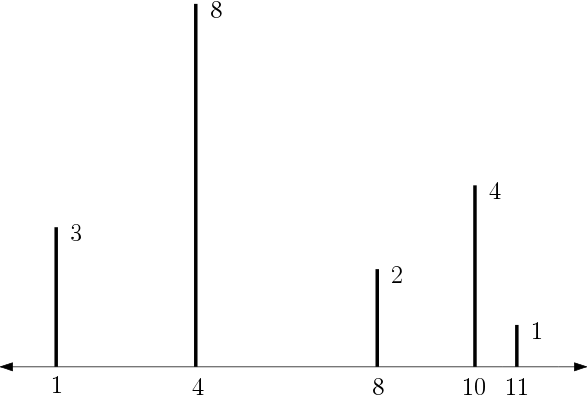

There are $n$ wooden rods vertically placed over a horizontal line. The rods are numbered 1 through $n$ from left to right. Each rod $i$ ($1 \\le i \\le n$) is placed at position $x_i$ and has a height $h_i$.

A termite wants to eat all the rods one by one. It starts eating from an arbitrary rod $s$ ($ 1 \\le s \\le n$). Then, after eating a rod $i$, the termite selects the next rod to eat based on the following method. Among the remaining rods $j$, the one with maximum $h_j - | x_i - x_j |$ is selected. If there are ties, the one with minimum $| x_i - x_j |$ is selected. If there are still ties, the left-most rod is selected.
Your task is to calculate the total (horizontal) distance traveled by the termite to eat all the rods.
The first line of the input contains two space-separated integers $n$, the number of rods, and $s$, the starting rod number ($1 \\le s \\le n \\le 100000$). The rods are described in the next $n$ lines. On the line $1 + i$ ($1 \\le i \\le n$), the $i$-th rod is specified with two space-separated integers $x_i$ ($| x_i | \\le 10 ^ 9$) and $h_i$ ($1 \\le h_i \\le 10 ^ 9$). Additionally, for each $i$ ($1 \\le i \\le n - 1$), $x_i \\le x_{i + 1}$.
You should print a single integer denoting the total distance traveled by the termite.